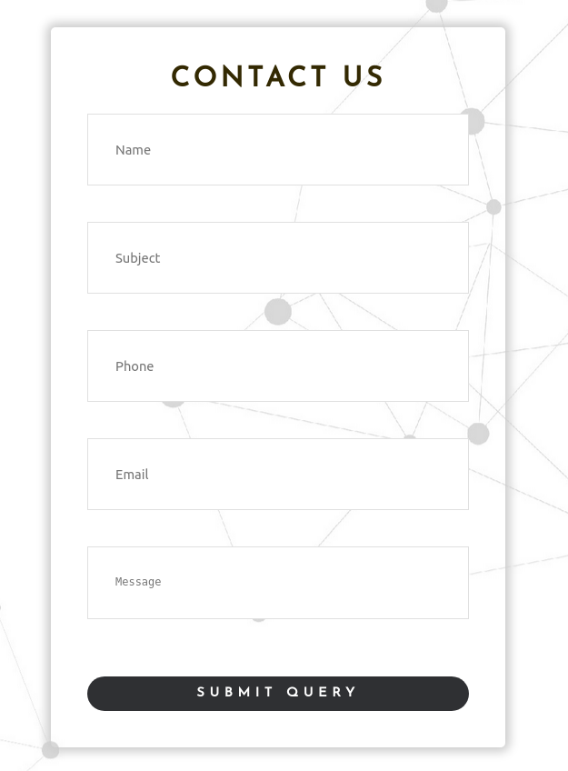

The above shown navigation bar is snipped from w3scools.com. The navigation has a hover effect with black background and current page is shown with a greeen background.
Above shows the navigation bar used in my website. Rhe navigation bar is palced in a grey background. In this navigation bar there is hover effect of a red background and the current page is shown with the same red color in the navigation content font.
The above shown social media links is snipped from motorolla.com. The links has square shaped white icons on a blue background to link to their social media on clicking.
Above shows the social media links used in my website. An individual grey circular background is given and in clicking the icon my respective social media is visited in another brower tab.
The above shown navigation bar logo is snipped from apple.com. in clicking the apple logo the webpage is redirected to the home page.
Above shows the navigation bar logo used in my website. In this navigation bar logo I have used my own logo with my middle name and on clicking the logo the webpage is redirected to the home page.

The above shown author discription is snipped from an article on dark web from csoonline.com. There is authors pictures along with his designation in this section.
Above shows the author box used in my blog of my website. The is my circular image and my full name and credentials and on clicking on my picture or my full name the page is redirecte to my CV in the website.

The above shown form page is snipped from contact page of freshworks.com.The form page has text area for firstname, lastname, email and phone number and a message box and a pull down menu for type of query. The form is submited by clicking on the blue submit button.
Above shows the form page used in my website. The page is in the contact us page and it has text area for Name, Subject, Phone , Email and Message with a black submit query button. The form is validated by using a javascript.